Don't Starve Together: Characters
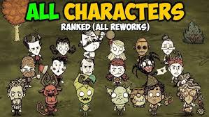Wilson
The Gentleman Scientist
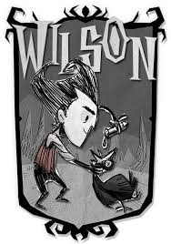Wilson, the first character available, is known for his ability to grow a magnificent beard, which provides insulation during winter. He's a balanced and beginner-friendly choice. He quite basic as he has no weakness or anything to make him stand out.
Motto: "I will conquer this world with the power of my MIND!"
Willow
The Firestarter
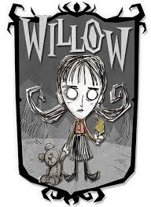Willow is immune to fire damage and comes with her trusty lighter, Bernie the teddy bear, and the ability to thrive near flames and produce magical flame attacks, making her perfect for managing sanity in the dark.
Motto: "All will bathe in the prettiest of flames."
Wolfgang
The Strongman
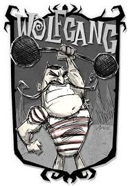Wolfgang grows stronger when well-fed but becomes weaker when his hunger drops. He's a powerhouse in combat, ideal for players who love to fight.
Motto: "I am mighty! No one is mightier!"
Wendy
The Bereaved
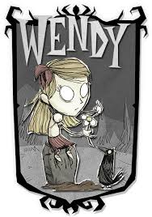Wendy summons her ghostly twin sister, Abigail, to help fight enemies. She's great for crowd control but suffers from reduced damage output.
Motto: "Abigail? Come back! I'm not done playing with you."
WX-78
The Soulless Automaton
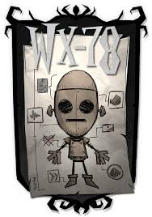WX-78 can upgrade and heal itself using gears and is immune to food spoilage. However, it takes damage from rain, making weather management crucial.
Motto: "EMPATHY MODULE NOT RESPONDING"
Wickerbottom
The Librarian
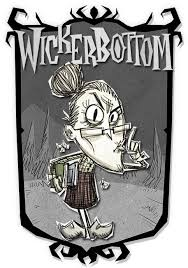Wickerbottom is a knowledgeable character with access to unique crafting recipes and books that can summon effects, but she suffers from a strict sleep schedule.
Motto: "Shhhh! No talking!"
Woodie
The Lumberjack
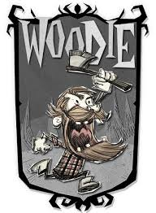Woodie has a deep connection to trees and transforms into a werebeaver, weremoose, or weregoose depending on the situation, offering versatile gameplay options.
Motto: "That's a nice lookin' tree, eh? Not for long."
Wes
The Silent
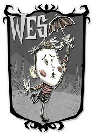Wes is a challenge and an joke character with reduced stats, making survival more difficult. Wes is also a complete mute characters. He's great for experienced players looking for a tougher experience or those who hate themselves.
Motto: "..."
Maxwell (AKA William Carter)
The Puppet Master
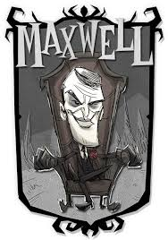Maxwell can summon shadow puppets to assist in tasks, balancing sanity costs for efficiency.He's is great for any team as he can save his team time on getting resources in a timely manner. His fragile health makes him challenging yet rewarding.
Motto: "Freedom suits me."
Wigfrid
The Battleborn
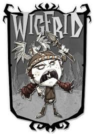Wigfrid excels in combat and gains health and sanity from fighting, but she can only eat meat, requiring strategic food management.
Motto: "All the wörld's a stage. För me!"
Webber
The Spiderboy
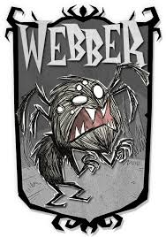Webber can befriend spiders and has unique interactions with them, offering a fresh perspective on gameplay. Webber tend to be a very beginner-friendly character. Webber is a regular boy fused with a spider from the Constant. Most mobs in the game is hostile to Webber since he's a monster character.
Motto: "We're always together, and never alone"
Walter
The Fearless
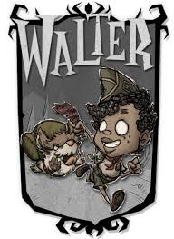Walter is a boyscout who loves his dog and uses his slingshot to take down opponents. He is fearless and wouldn't get an sainty drain when fighting monsters or when in darkness. Walter uses range to take down his opponents. If walter gets hit, he'll lose sainty instantly on how hard he gotten hit and he takes more damage to bees as he's allergic to them.
Motto: "A Pinetree Pioneer is always prepared!"
Winona
The Handywoman
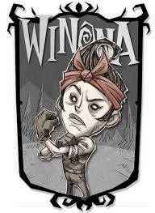Winona has a unique of ability making catapults and robots making gathering resources automated. Winona can craft at a high speed but at the cost of hunger.
Motto: "Anything can be fixed with hard work and elbow grease."
Warly
The Culinarian
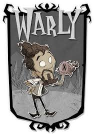Warly is at his strongest in an team setting as anyone could cook but warly can make exculsive dishes and seasonings that only Warly can make. His food could carry a whole team as they can increase people damage resistance, damage buff, action speed, and more. The only draw back is he gets hungery quicker, he can't eat raw food due to his taste, and eating the same food over again will reduce the food gain from it as he gets tired of it.
Motto: "Nothing worthwhile is ever done on an empty stomach!"
Wortox
The Soul Starved
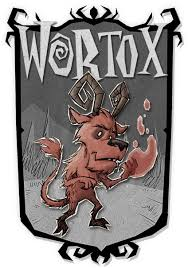Wortox is a DLC character you can unlock with money or spools. Wortox can collect souls of his opponents to teleport, eat, or heal others or himself. His downsides is if he becomes greedy and hold more than 20 souls he will lose sainty and half his souls. Another downside is he gets less stats from normal food and would have to eat souls which causes his sanity to go down. Most mobs in the game is hostile to Wortox since he's a monster character.
Motto: "Pardon me if I don't shake your hand."
Wormwood
The Lonesome
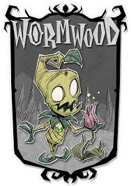Wormwood is a DLC character you can unlock with money, spools, or if you have single-player Don't Starve Hamlet DLC. Wormwood could plant plants anywhere without tilling and gain sanity everytime he plants. He also gains a speedbuff, health regeneration, and gain a heat resistance when in his full bloom stages. His downsides is that he can't chop or dig up plants without losing sanity. He also can't heal by eating food which a majority of characters heal from, but he can use fertilizers to give him a slight healing.
Motto: "Hello friend?"
Wurt
The Half-Pint
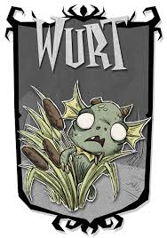Wurt is a DLC character you can unlock with money or spools. Wurt, a playable character in Don't Starve Together, is a loyal Merm who thrives in swampy environments. Her strengths include increased speed on marsh turf, the ability to befriend Merms, and unique crafting options like the Merm King for powerful buffs. However, she has significant weaknesses, including an aversion to eating meat, lower sanity near pigman and also the pigman are aggressive to her, and vulnerability in non-swamp biomes. Wurt is ideal for players who enjoy strategic planning and building Merm-based settlements.
Motto: "Mermfolk known for hos-per-tality, florp."
Wanda
The Timekeeper
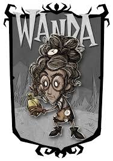Wanda is a DLC character you can unlock with money or spools. Wanda, the Timekeeper in Don't Starve Together, excels in managing time and combat with her age-based abilities. Her strengths include powerful clock-themed weapons, the ability to teleport with Backsteps, and the ability to rewind her age using Ageless Watches. However, her weaknesses are a lack of traditional health (aging instead of healing), a high learning curve, and reliance on crafting her unique watches to stay effective.